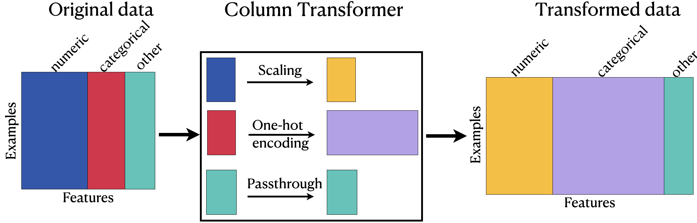
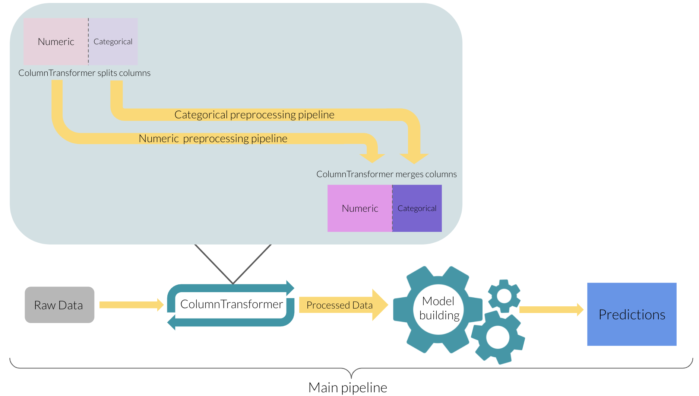

from sklearn.compose import ColumnTransformerBefore we fit our model, we want to apply different transformations on different columns.

| longitude | latitude | housing_median_age | households | ... | ocean_proximity | rooms_per_household | bedrooms_per_household | population_per_household | |
|---|---|---|---|---|---|---|---|---|---|
| 6051 | -117.75 | 34.04 | 22.0 | 602.0 | ... | INLAND | 4.897010 | 1.056478 | 4.318937 |
| 20113 | -119.57 | 37.94 | 17.0 | 20.0 | ... | INLAND | 17.300000 | 6.500000 | 2.550000 |
| 14289 | -117.13 | 32.74 | 46.0 | 708.0 | ... | NEAR OCEAN | 4.738701 | 1.084746 | 2.057910 |
| 13665 | -117.31 | 34.02 | 18.0 | 285.0 | ... | INLAND | 5.733333 | 0.961404 | 3.154386 |
| 14471 | -117.23 | 32.88 | 18.0 | 1458.0 | ... | NEAR OCEAN | 3.817558 | 1.004801 | 4.323045 |
5 rows × 9 columns
longitude float64
latitude float64
housing_median_age float64
...
rooms_per_household float64
bedrooms_per_household float64
population_per_household float64
Length: 9, dtype: objectfrom sklearn.pipeline import Pipeline
from sklearn.impute import SimpleImputer
from sklearn.preprocessing import StandardScaler, OneHotEncoder
numeric_transformer = Pipeline(
steps=[("imputer", SimpleImputer(strategy="median")),
("scaler", StandardScaler())]
)
categorical_transformer = Pipeline(
steps=[("imputer", SimpleImputer(strategy="constant", fill_value="missing")),
("onehot", OneHotEncoder(handle_unknown="ignore"))]
)ColumnTransformer(remainder='passthrough',
transformers=[('numeric',
Pipeline(steps=[('imputer',
SimpleImputer(strategy='median')),
('scaler', StandardScaler())]),
['longitude', 'latitude', 'housing_median_age',
'households', 'median_income',
'rooms_per_household',
'bedrooms_per_household',
'population_per_household']),
('categorical',
Pipeline(steps=[('imputer',
SimpleImputer(fill_value='missing',
strategy='constant')),
('onehot',
OneHotEncoder(handle_unknown='ignore'))]),
['ocean_proximity'])])In a Jupyter environment, please rerun this cell to show the HTML representation or trust the notebook. ['longitude', 'latitude', 'housing_median_age', 'households', 'median_income', 'rooms_per_household', 'bedrooms_per_household', 'population_per_household']
| Name | Type | Value |
|---|---|---|
| feature_names_in_ feature_names_in_: ndarray of shape (`n_features_in_`,) Names of features seen during :term:`fit`. Defined only when `X` has feature names that are all strings. .. versionadded:: 1.0 |
ndarray[object](8,) | ['longitude','latitude','housing_median_age',...,'rooms_per_household','bedrooms_per_household','population_per_household'] |
| indicator_ indicator_: :class:`~sklearn.impute.MissingIndicator` Indicator used to add binary indicators for missing values. `None` if `add_indicator=False`. |
NoneType | None |
| n_features_in_ n_features_in_: int Number of features seen during :term:`fit`. .. versionadded:: 0.24 |
int | 8 |
| statistics_ statistics_: array of shape (n_features,) The imputation fill value for each feature. Computing statistics can result in `np.nan` values. During :meth:`transform`, features corresponding to `np.nan` statistics will be discarded. |
ndarray[float64](8,) | [-118.49, 34.25, 29. ,..., 5.23, 1.05, 2.82] |
| longitude |
| latitude |
| housing_median_age |
| households |
| median_income |
| rooms_per_household |
| bedrooms_per_household |
| population_per_household |
| x0 |
| x1 |
| x2 |
| x3 |
| x4 |
| x5 |
| x6 |
| x7 |
['ocean_proximity']
| ocean_proximity |
| x0_<1H OCEAN |
| x0_INLAND |
| x0_ISLAND |
| x0_NEAR BAY |
| x0_NEAR OCEAN |
| numeric__longitude |
| numeric__latitude |
| numeric__housing_median_age |
| numeric__households |
| numeric__median_income |
| numeric__rooms_per_household |
| numeric__bedrooms_per_household |
| numeric__population_per_household |
| categorical__ocean_proximity_<1H OCEAN |
| categorical__ocean_proximity_INLAND |
| categorical__ocean_proximity_ISLAND |
| categorical__ocean_proximity_NEAR BAY |
| categorical__ocean_proximity_NEAR OCEAN |
| longitude | latitude | housing_median_age | households | ... | ocean_proximity | rooms_per_household | bedrooms_per_household | population_per_household | |
|---|---|---|---|---|---|---|---|---|---|
| 6051 | -117.75 | 34.04 | 22.0 | 602.0 | ... | INLAND | 4.897010 | 1.056478 | 4.318937 |
| 20113 | -119.57 | 37.94 | 17.0 | 20.0 | ... | INLAND | 17.300000 | 6.500000 | 2.550000 |
| 14289 | -117.13 | 32.74 | 46.0 | 708.0 | ... | NEAR OCEAN | 4.738701 | 1.084746 | 2.057910 |
| 13665 | -117.31 | 34.02 | 18.0 | 285.0 | ... | INLAND | 5.733333 | 0.961404 | 3.154386 |
| 14471 | -117.23 | 32.88 | 18.0 | 1458.0 | ... | NEAR OCEAN | 3.817558 | 1.004801 | 4.323045 |
5 rows × 9 columns
| longitude | latitude | housing_median_age | households | ... | ocean_proximity_INLAND | ocean_proximity_ISLAND | ocean_proximity_NEAR BAY | ocean_proximity_NEAR OCEAN | |
|---|---|---|---|---|---|---|---|---|---|
| 0 | 0.908140 | -0.743917 | -0.526078 | 0.266135 | ... | 1.0 | 0.0 | 0.0 | 0.0 |
| 1 | -0.002057 | 1.083123 | -0.923283 | -1.253312 | ... | 1.0 | 0.0 | 0.0 | 0.0 |
| 2 | 1.218207 | -1.352930 | 1.380504 | 0.542873 | ... | 0.0 | 0.0 | 0.0 | 1.0 |
| 3 | 1.128188 | -0.753286 | -0.843842 | -0.561467 | ... | 1.0 | 0.0 | 0.0 | 0.0 |
| 4 | 1.168196 | -1.287344 | -0.843842 | 2.500924 | ... | 0.0 | 0.0 | 0.0 | 1.0 |
5 rows × 13 columns
array(['ocean_proximity_<1H OCEAN', 'ocean_proximity_INLAND', 'ocean_proximity_ISLAND', 'ocean_proximity_NEAR BAY', 'ocean_proximity_NEAR OCEAN'], dtype=object)['longitude',
'latitude',
'housing_median_age',
'households',
'median_income',
'rooms_per_household',
'bedrooms_per_household',
'population_per_household',
'ocean_proximity_<1H OCEAN',
'ocean_proximity_INLAND',
'ocean_proximity_ISLAND',
'ocean_proximity_NEAR BAY',
'ocean_proximity_NEAR OCEAN']| fit_time | score_time | test_score | train_score | |
|---|---|---|---|---|
| 0 | 0.020784 | 0.146812 | 0.695818 | 0.801659 |
| 1 | 0.021052 | 0.138471 | 0.707483 | 0.799575 |
| 2 | 0.019903 | 0.143288 | 0.713788 | 0.795944 |
| 3 | 0.020015 | 0.144875 | 0.686938 | 0.801232 |
| 4 | 0.019844 | 0.121456 | 0.724608 | 0.832498 |
| fit_time | score_time | test_score | train_score | |
|---|---|---|---|---|
| 0 | 0.012365 | 0.093954 | 0.693883 | 0.792395 |
| 1 | 0.012422 | 0.089031 | 0.685017 | 0.789108 |
| 2 | 0.012375 | 0.090848 | 0.694409 | 0.787796 |
| 3 | 0.012407 | 0.092446 | 0.677055 | 0.792444 |
| 4 | 0.012378 | 0.074675 | 0.714494 | 0.823421 |
fit_time 0.012389
score_time 0.088191
test_score 0.692972
train_score 0.797033
dtype: float64Pipeline(steps=[('preprocessor',
ColumnTransformer(remainder='passthrough',
transformers=[('numeric',
Pipeline(steps=[('imputer',
SimpleImputer(strategy='median')),
('scaler',
StandardScaler())]),
['longitude', 'latitude',
'housing_median_age',
'households',
'median_income',
'rooms_per_household',
'bedrooms_per_household',
'population_per_household']),
('categorical',
Pipeline(steps=[('imputer',
SimpleImputer(fill_value='missing',
strategy='constant')),
('onehot',
OneHotEncoder(handle_unknown='ignore'))]),
['ocean_proximity'])])),
('reg', KNeighborsRegressor())])In a Jupyter environment, please rerun this cell to show the HTML representation or trust the notebook. ['longitude', 'latitude', 'housing_median_age', 'households', 'median_income', 'rooms_per_household', 'bedrooms_per_household', 'population_per_household']
['ocean_proximity']

sklearn is fine with categorical labels (y-values) for classification problems.